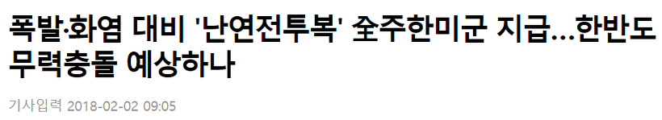
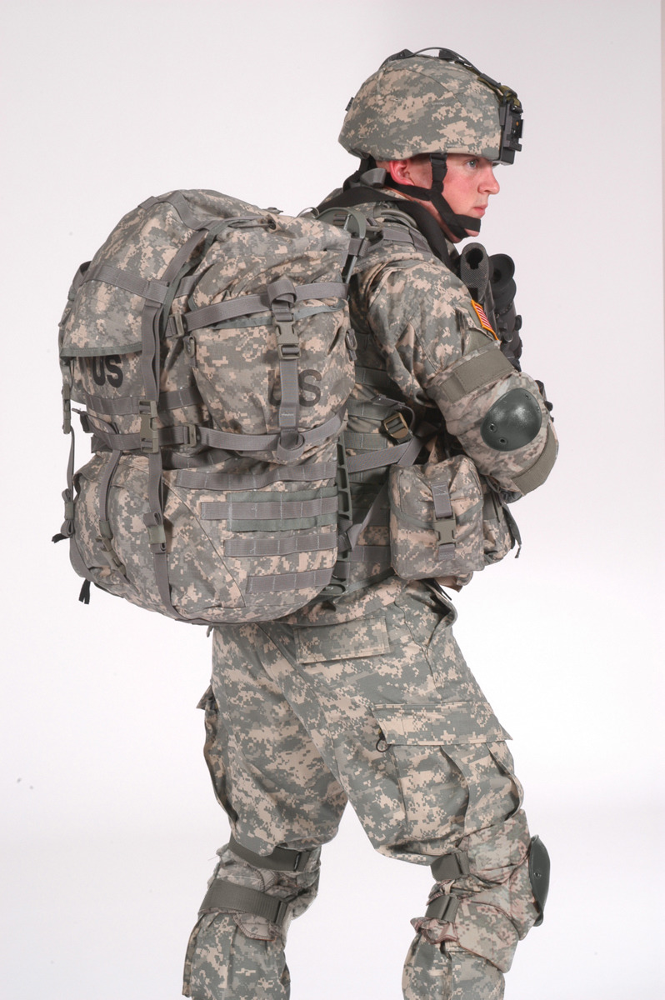
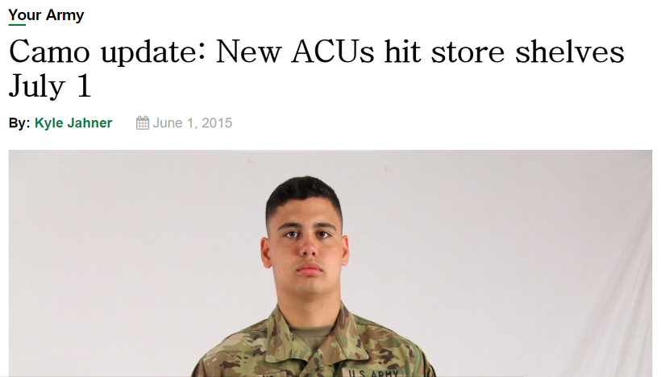
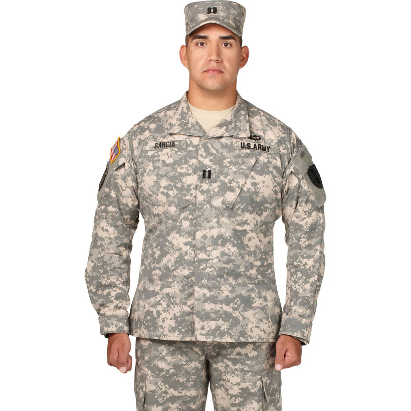
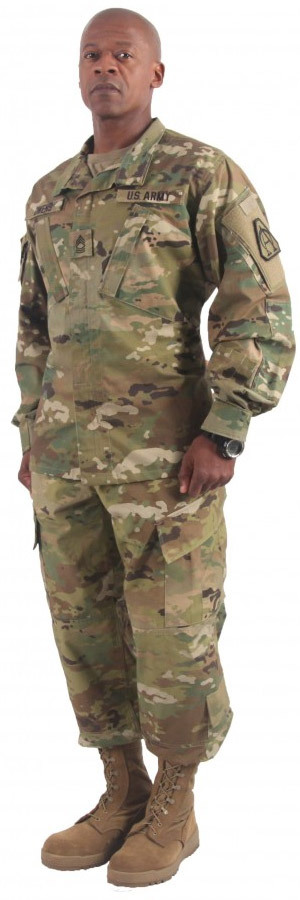
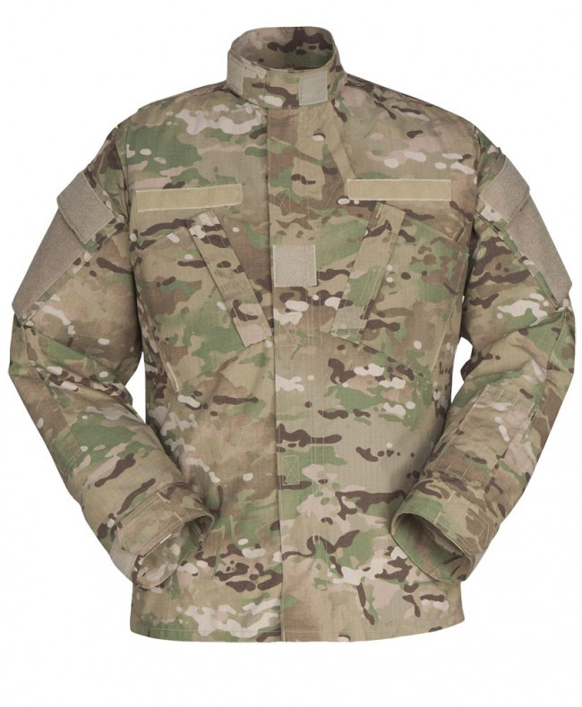

주한미군이 전쟁 준비에 나섰다 ? 난연(flame-resistant) 군복 지급 소동
게시: 2018-02-03T18:57:25+09:00
최근 몇몇 언론에서 '주한미군에게 난연(flame-resistant) 군복을 지급할 계획이며, 이는 한국에서 곧 전투가 벌어질 수도 있다는 뜻'이라는 취지의 보도를 했습니다.

http://www.segye.com/newsView/20180202004289
http://mbn.mk.co.kr/pages/news/newsView.php?category=mbn00009&news_seq_no=3448676
"주한미군사령부가 불에 잘 타지 않는 '난연전투복'을 주한미군 전원에게 지급한다는 방침을 세우고 관련 업체에 주문한 것으로 1일 알려졌습니다. 난연 전투복은 미군이 2006년 아프가니스탄 전쟁에 참전한 미군 장병을 폭발 화염으로부터 보호하기 위해 지급하기 시작했습니다. 주한미군의 이번 결정은 유사시 한반도에서 무력충돌 가능성을 염두에 두고 사전 준비에 나선 것이라는 관측이 나옵니다."
반면 '민중의 소리'라는 매체에서 아래와 같은 반박 보도를 내기도 했고, 헤랄드경제 인터넷판에서도 같은 취지의 보도를 했습니다.
http://www.vop.co.kr/A00001250287.html
http://news.heraldcorp.com/view.php?ud=20180202000531
"주한미군 관계자는 2일, 기자와의 통화에서 “주한미군사령부가 불에 잘 타지 않는 난연(難燃·Flame Resistant) 전투복을 주한미군 전원에게 지급한다는 방침을 세웠다”는 보도와 관련해 “(직업군인인) 미군에게 지급한다는 자체가 틀린 명백한 오보”라고 말했다. 이 관계자는 또 “주한미군의 이번 결정은 유사시 한반도에서 무력충돌 가능성을 염두에 두고 사전 준비에 나선 것이라는 관측을 낳고 있다”는 내용과 관련해서도 “우리는 자주 군복을 교체한다”면서 “모두 미군(개인)이 자체 구매하는 것이고, 주한미군이 독립해서 특수복을 지급하는 계획은 전혀 없다”고 선을 그었다."
어느 쪽 보도가 맞는 말일까요 ? 만약 이것이 미군의 북침 작전 조짐이라면, 주한미군 측에서야 작전 보안상 당연히 부인할 것입니다. 그러니 주한미군 측의 부인에도 불구하고 여전히 불안하게 생각하시는 분들도 있을 수 있습니다. 그런데, 저 민중의 소리 기사 중에서, “(직업군인인) 미군에게 지급한다는 자체가 틀린 명백한 오보”라는 말은 또 무슨 뜻일까요 ?
결론부터 말씀드리면, 이건 미군 군복의 구매 절차에 대해 잘 모르는 기자가 낸 오보일 가능성이 매우 높습니다.
(자랑은 결코 아니지만) 저는 약 25년 전에 카투사로 복무를 했습니다. 그때 매우 신기하게 생각한 것 중 하나가, 미군은 군복을 '지급'받는 것이 아니라 돈을 내고 산다는 것이었습니다. 실제로 미군 기지마다 '군복 상점'이 있고, 미군들은 거기서 군복과 군화, 군모 등을 돈을 주고 삽니다. 세상에, 군복을 돈 주고 사입어야 한다니 ! 무슨 놈의 군대가 이렇단 말입니까 ??
그런데 의외로, 병사들이 자기 돈으로 군복을 사입는 것은 역사적으로나 지역적으로나 꽤 보편적인 일입니다. 우리나라처럼 병사들에게 군대가 일괄적으로 군복을 '지급'하는 것은 오히려 더 특별한 경우입니다. 우리나라는 징병제니까, 당연히 수건과 비누부터 시작해서 군복과 헬멧, 총기류는 물론 하루 세끼와 숙소까지 모두 군이 지급합니다. 그러나 미군은 모병된 직업 군인들입니다. 이들은 충분한 급여를 받기 때문에, 모든 것을 다 돈을 내고 군으로부터 구입하는 것입니다. 사실 군복 뿐만 아니라, 군 식당(dining facility 혹은 DFAC, 혹은 그냥 mess hall)에서 주는 식사에 대해서도 급여 공제의 형태로 별도로 돈을 냅니다. 물론 미군조차도 군인 급여라는 것은 결코 넉넉한 것이 아니기 때문에 미군들에게는 군복을 사기 위한 수당(annual stipend for the purchase of uniforms and accessories)이 별도로 지급됩니다. 그럼 병영 막사에 대해서도 월세를 내냐고요 ? 제가 군 시절 미군하고 뭐 아주 친하게 지낸 사이는 아니라서 자세히는 모릅니다만, 역시 급여에서 공제되는 것으로 알고 있습니다. 물론 매우 싼 가격이겠지요. 가족이 있는 경우 군 막사가 아니라 기지 밖 민간 숙소에서 지내는 미군도 꽤 많은데, 그런 경우에는 급여에서 막사 월세가 공제되지 않을 겁니다. 물론 그 민간 숙소의 월세는 병사 개인 돈으로 지불해야겠지요.
설마 그럼 M4 라이플 같은 개인 화기류도 자기 돈으로 구매하는 것이냐 라고 놀라시는 분도 있겠습니다만, 그건 아닙니다. 제가 알기로는 군화와 군모(soft cap), 군복류는 피복류로서, 일종의 소모품이자 개인 소유물로 처리됩니다만, 총기는 물론 헬멧과 배낭, 탄띠 등은 소모품이 아니라 전투용 장비로 취급되고 군의 소유물을 병사들이 대여해서 사용하는 것입니다. 쉽게 이해하려면 병사가 한 기지에서 다른 기지로 전출 가는 상황을 생각하시면 됩니다. 그런 경우 병사는 군복과 여별의 군화 등을 더플백에 넣어서 가되, 헬멧과 배낭, 총기류는 기지에 반납하고 갑니다. 헬멧과 전투용 배낭은 군 장비이고, 군모와 더플백은 개인 소유물인 셈이지요.

저 위 '민중의 소리' 기사에서 “(직업군인인) 미군에게 지급한다는 자체가 틀린 명백한 오보”라는 표현이 나오는 것은 바로 이런 배경 때문입니다. 미군 당국이 병사들 개개인에게 군복을 지급하는 것은 있을 수 없는 일이라는 소리이지요.
그런데, 사실 그게 또 꼭 그렇지만도 않습니다. 2001년부터 2014년까지의 미군의 아프가니스탄 침공 및 평정 작전을 Operation Enduring Freedom이라고 부르는데, 여기에 참전한 병력들에게는 저 위 세계일보 기사에서처럼 난연성 군복(Flame-resistant Army Combat Uniform, FRACU)을 지급한 일이 있습니다. 그것도 아마 공짜는 아니었을 것 같습니다. 제 추측에 불과합니다만, 일부 금액이 참전 병사들의 급여에서 공제되었을 것입니다. 물론 실전 투입에 따른 이런저런 추가 수당이 훨씬 많았을테니 별 티는 나지 않았겠지요. 참고로, 군모부터 전투복, 군화와 양말까지를 다 사려면 병사 개인은 대략 100달러 정도의 돈을 지불해야 한다고 합니다.
그러니까 결국 주한미군 병사들에게 저 난연성 군복이 지급될 것이라는 뉴스가 반드시 오보가 아닐 수도 있다는 이야기 아니냐고 생각하실 수도 있겠습니다. 제가 미군 내에 정보원이 있는 것도 아니니 저도 확신할 수는 없습니다만, 오보라기보다는, 오해가 빚은 기사일 가능성이 매우 높습니다. 제가 그렇게 생각하는 이유는 구글링을 해보시면 쉽게 공감하실 것입니다. 즉, 아래 미육군 신규 군복 교체 관련 공고와 기사들을 보시기 바랍니다.

http://www.armyg1.army.mil/hr/uniform/docs/FRACU.pdf
https://www.armytimes.com/news/your-army/2015/06/01/camo-update-new-acus-hit-store-shelves-july-1/
http://www.hcdmag.com/ar-670-1/combat-uniform-ensemble/
요약하면, 미육군은 2015년부터 군복(Army Combat Uniform, ACU)을 작전용 위장복(Operational Camouflage Pattern, OCP)으로 교체하고 있습니다. 이건 일괄적으로 병사들에게 지급되는 것이 아닙니다. 위에서 언급한 기지내 군복 상점에 배포되는 군복이 신상으로 바뀐다는 것 뿐입니다. 병사들은 기존 군복이 낡고 헤어져 새 군복을 살 때, 새로운 OCP 디자인의 ACU를 사게 되는 것입니다. 이 새로운 ACU 교체 계획은 2019년까지, 무려 4년에 걸쳐 진행됩니다. 기존에 만들어 비축해놓은 기존 UCP(Universal Camouflage Pattern) 디자인의 ACU가 다 소진될 때까지 넉넉한 시간을 주는 것이지요. 이 기간 동안에는 새 군복과 예전 군복을 혼용해서 입는 것이 허용됩니다. 물론 2019년 이후에는 기존 UCP 디자인의 ACU를 입는 것이 허락되지 않습니다.


(윗 사진이 UCP이고 아랫 사진이 신규 OCP입니다. 뭐 민간인의 눈엔 둘다 그냥 군복일 뿐이지요.)
이 새 군복 프로그램과 난연성 군복은 무슨 상관일까요 ? 미군도 예전부터 난연성 군복, 즉 FRACU를 입었던 것은 아닙니다. 미군에게 난연성 군복이 지급된 것은 위에서 언급한 아프가니스탄에서의 Operation Enduring Freedom 중이던 2010년부터였습니다. 그런데 그 효과가 좋았다고 생각되었는지, 불연성 면직과 나일론, 아라미드 섬유로 만들어진 FRACU를 이번 새로운 군복 프로그램에 집어 넣었습니다. 그래서 일반 ACU와 난연성 FRACU가 군복 상점에서 시판됩니다. 또, 아프가니스탄 등지로부터 재배치되는 병사들에게, 현장에서 입던 FRACU를 새로 배치받은 기지에서도 평상 근무복으로 입을 수 있도록 허가하는 조치도 함께 이루어졌습니다.

(이것이 문제의 난연 전투복 Flame-Resistant Army Combat Uniform, FRACU 입니다.)
그러니까 정리하면, 난연성 군복인 FRACU가 군복 상점에 배포되는 것은 미군이 2015년~2019년 사이에 진행 중인 새로운 군복 교체 프로그램의 일부일 뿐입니다. 주한 미군에서만 일어나는 일도 아니고, 전세계에 주둔한 모든 미군 기지에서 일어나고 있는 일입니다. 올림픽 끝나면 전쟁 난다는 것은 근거없는 괴담에 불과합니다.
당연히 FRACU가 일반 ACU보다는 비쌀 것이고, 따라서 병사들은 돈을 아끼기 위해 FRACU보다는 일반 ACU를 사려고 할 것 같습니다. 혹시 병사들에게 적어도 1벌의 FRACU를 갖추라는 강제 규정이 함께 내려졌는지 찾아보았으나, 그런 기사는 인터넷에는 뜨지 않네요. 글쎄요, 굳이 별도의 강제 지시가 없더라도, 전투시 자신의 생존에 대한 문제니까 더 비싸더라도 자발적으로 FRACU를 구매하는 병사들이 많을지도 모르지요.
사족 1.
미군은 돈을 내고 군복을 사입는다면, 카투사는 어떻게 하냐고요 ? 카투사도 같은 미군 군복 상점에 가서 군복을 삽니다. 잘 기억은 안 나는데, 1년에 한번인가 2년에 한번인가, 카투사 병사들에게도 거기서 군복류를 살 수 있는 일종의 포인트가 주어지고, 그 포인트를 현금처럼 사용하여 필요한 군복을 살 수 있었습니다. 다만 그 포인트로는 야전 상의 한벌 사기에도 불충분한 금액이었고, 그냥 군복 바지와 상의 정도를 살 수 있는 금액이었던 것으로 기억합니다.
사족 2.
망나니 미군 병사들이 군복 살 돈으로 술을 마셔버리고 그냥 낡은 군복을 입으려 할 수도 있습니다. 그런 경우 어떻게 될까요 ? 실제로 그런 케이스를 보지는 못했습니다만, 그런 경우가 아예 없지는 않을 것입니다. 그런 경우 좀 심하다 싶을 정도로 낡은 군복을 입는다면, 평상 근무시 부사관에게 지적을 받을 것이고, 특히 1년에 한번 정도 있는 장비 검열 때 반드시 지적을 받게 됩니다. 직업 군인이니 그렇게 지적을 받는 것은 근무 평점에 매우 안 좋은 영향을 끼치게 되니, 돈 몇 푼 아끼려고 무리하게 낡은 군복만 입는 경우는 거의 없는 것으로 알고 있습니다.
사족 3.
헬멧과 소총, 배낭 등은 개인 소유가 아니라 부대 소유 장비로서 전출시 반납해야 하는 것이라고 했지요. 혹시 사용 중에 헬멧이나 배낭 등을 파손시키는 경우 병사 개인이 돈으로 변상해야 할까요 ? 제가 알기로는 변상해야 합니다. 그런 장비를 지급/반납하는 창고(이름이 기억나지 않네요)에서는 장비를 반납 받을 때 꼼꼼히 검사하여 파손된 부분이 없는지 조사하거든요. 물론 정당한 사유(fair wear & tear)인 경우에는 부대 지휘관이 승인하면 그에 대한 변제를 면제받는 것으로 알고 있습니다. 그렇다면 설마 소총도...?? 제가 알기로는 총기 등의 무기류는 별도로 관리되며, fair wear & tear 이외의 파손이나 분실은 돈으로 변제하는 정도가 아니라 군법회의감이라고... 그러니 군에 간 아들이 집에 전화를 걸어 'K2 소총을 망가뜨려 급히 돈이 필요하니 송금을 해달라'는 소리를 하면 그냥 매정하게 끊으시면 되겠습니다.
사족 4.
역사적으로 군대가 군복을 지급하는 것이 더 드문 일이라고 했지요. 실제로 고대 그리스의 중장보병들은 갑옷과 방패, 창 등을 모두 개인 비용으로 마련해야 했습니다. 중세 영국에서 유사시 소집되는 농민병들도 무기와 장비를 자기 돈으로 마련해서 소집에 응해야 했고요. 제 기억으로는 어느 책에선가 그런 무기와 장비는 '따뜻한 누비옷과 철제 헬멧, 그리고 튼튼한 창 한 자루'라고 규정되었다고 읽었습니다. 우리나라도 조선 시대 병사들은 자신의 비용으로 벙거지와 군복, 창 등을 마련해야 했다고 들었는데, 제가 그쪽으로는 잘 모르겠네요.
사족 5.
제 블로그의 주제인 나폴레옹 시대는 어땠을까요 ? 모병제이던 당시 영국군은 최초 입대시 지급받는 군복류에 대해 모두 돈을 내야 했습니다. 물론 입대할 때 군복살 돈을 들고 입대해야 했던 것은 아니고, 급여에서 공제되었습니다. 심지어 전투에서 만약 머스켓 소총을 분실하거나 파손하면 그 비용도 급여에서 공제되었습니다. 물론 지휘관이 전투 상황상 그럴 수 밖에 없었다고 인정해주면 면제를 받았지요. 징집제인던 나폴레옹의 프랑스군도 마찬가지였던 모양입니다. 프랑스군은 직업 군인인 영국군의 약 절반 정도에 해당하는 급여를 받았지만, 아무튼 급여를 받긴 받았거든요. 제가 전에 인용했던 당시 프랑스 징집병이던 쿠아녜의 회고록 중 아래 내용을 보시면 쉽게 이해가 가실 것입니다.
-------------------------------------
이렇게 전진한 쿠아녜의 여단은 북부 이탈리아의 도시 크레모나(Cremona)에 수비대로 주둔하게 됩니다. 그러나 여기서 쿠아녜는 난감한 일을 겪습니다. 수비대의 거처가 벼룩과 빈대가 들끓는 짚단을 쌓아놓은 곳이다보니, 이 해충에게 시달리던 쿠아녜는 군복 자켓에서 벼룩과 빈대를 없애겠다고 잿물을 만들어 자켓을 담궈놓습니다. 그러나 자켓이 너무 싸구려 원단으로 만든 것이었는지 아니면 잿물이 너무 강한 것이었는지, 안감만 남기고 자켓이 그냥 녹아버리는 사태가 발생합니다 ! 당장 입을 옷이 없어진 쿠아녜는 글자를 아는 친구에게 부탁하여 고향 집의 아버지와 삼촌에게 편지를 각각 씁니다. 군복을 새로 살 돈을 조금만 보내달라는 것이지요. 나중에 늦게나마 착불 형식의 답장들이 왔고, 쿠아녜는 그 편지 2통 값으로 3프랑(약 3만7천원 정도)의 돈을 내야 했습니다. 그런데 글자를 아는 하사관에게 그 내용을 읽어달라고 하니, 아버지는 거리가 너무 멀어 돈을 못보내겠다는 내용이었고, 삼촌은 세금을 방금 낸 상태가 돈이 한푼도 없다는 핑계로 역시 돈을 못보낸다는 내용이었습니다. 결국 쿠아녜는 크게 실망하고 삐져서, 두번 다시 아버지나 삼촌과는 편지를 주고 받지 않았다고 합니다. 게다가 동료들에게 꿨던 우편비용 3프랑을 갚아야 했으므로, 1번에 15수(약 9천원 정도)의 가격으로 민치오 강변에서 동료들 보초 서는 것을 대신 서주어야 했다고 합니다.